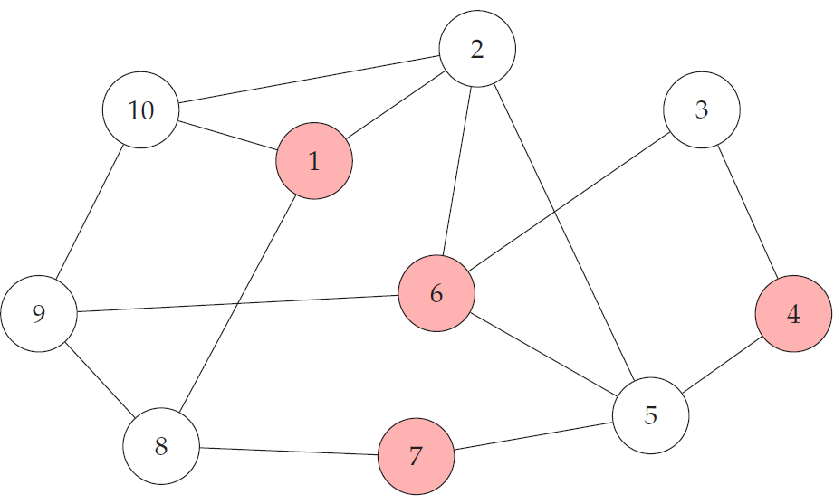
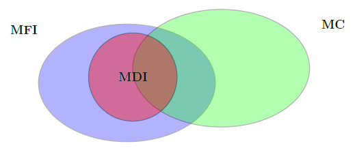

Proyecto académico
Conjuntos independientes maximales (MIS) en grafos dirigidos
Proyecto de investigación en computación distribuida y teoría de grafos que propone nuevos modelos de comunicación y protocolos para calcular conjuntos independientes maximales, extendiendo conceptos del problema clásico de consenso.Problema
En computación distribuida, múltiples procesadores deben tomar decisiones utilizando únicamente la información que reciben de sus vecinos, sin la existencia de un coordinador central. Uno de los problemas fundamentales en este contexto consiste en calcular un Conjunto Independiente Maximal (MIS), estructura ampliamente utilizada como base para algoritmos de planificación, asignación de recursos y organización de redes.
En términos de teoría de grafos, se dice que un conjunto es independiente si ninguno de sus elementos (en este caso, nodos) está conectado entre sí en el grafo, y es maximal si no es posible agregar otro nodo sin perder dicha propiedad.

Figura 1. Ejemplo de un conjunto independiente maximal (MIS). Los nodos destacados forman un conjunto independiente y no es posible agregar otro nodo sin perder esta propiedad.
Otro problema clásico en esta área es el problema de consenso, cuyo objetivo es que todos los procesadores alcancen un mismo acuerdo o valor utilizando únicamente su información local. Si bien ambos problemas persiguen objetivos distintos, comparten características relacionadas con la comunicación distribuida. Esta investigación surge a partir de la siguiente pregunta: ¿Es posible adaptar el enfoque utilizado en consenso para calcular un conjunto independiente maximal?
| Aspecto | Conjunto Independiente Maximal (MIS) | Problema de Consenso |
|---|---|---|
| Objetivo | Seleccionar un conjunto de nodos independientes y maximal dentro del grafo. | Lograr que todos los nodos alcancen un mismo acuerdo o decisión. |
| Resultado esperado | Un subconjunto de nodos que cumple las propiedades de independencia y maximalidad. | Un único valor compartido por todos los nodos del sistema. |
| Comunicación | Cada nodo intercambia información únicamente con sus vecinos. | Cada nodo intercambia información únicamente con sus vecinos. |
| Decisiones | Los nodos pueden tomar decisiones distintas según su posición en el grafo. | Todos los nodos deben tomar exactamente la misma decisión. |
| Relación en esta investigación | Problema distribuido que se busca resolver. | Sirve como base para proponer nuevos modelos de comunicación orientados al cálculo de un MIS. |
Tabla 1. Comparación, a grandes rasgos, entre el problema del Conjunto Independiente Maximal (MIS) y el problema clásico de consenso distribuido.
Metodología
La investigación considera dos grafos definidos sobre el mismo conjunto de nodos. El grafo no dirigido G = (V, E) representa el problema en el cual sus aristas determinan qué nodos son vecinos y sobre él se busca calcular un MIS En cambio, el grafo dirigido D = (V, F) representa la comunicación en el cual sus arcos determinan qué nodos pueden enviar información a otros durante la ejecución del algoritmo.
| Componente | Descripción general |
|---|---|
| Grafo no dirigido (G) | Representa las relaciones de vecindad entre los nodos del sistema. Sobre este grafo se busca calcular un Conjunto Independiente Maximal (MIS). |
| Grafo dirigido (D) | Modela la dirección en que fluye la información entre los nodos durante la ejecución del algoritmo distribuido. |
| Nodo | Corresponde a un procesador o agente que participa en la ejecución del algoritmo distribuido. |
| Arista no dirigida | Indica que dos nodos son vecinos dentro del problema del Conjunto Independiente Maximal. |
| Arco dirigido | Representa que un nodo puede enviar información a otro durante las rondas de comunicación. |
Tabla 3. Componentes principales del modelo distribuido utilizado en la investigación.
A partir de la estructura general presentada anteriormente, la investigación propone dos modelos de comunicación: el Modelo Fuertemente Independiente (MFI) y el Modelo Débilmente Independiente (MDI). Ambos buscan resolver el problema del Conjunto Independiente Maximal (MIS), pero difieren en la información disponible para cada nodo y en las restricciones impuestas sobre la estructura de comunicación.
Modelo Fuertemente Independiente (MFI)
En el Modelo Fuertemente Independiente (MFI) se consideran dos grafos definidos sobre el mismo conjunto de nodos V. El grafo no dirigido G = (V, E) representa las relaciones de vecindad y corresponde al grafo sobre el cual se busca calcular un Conjunto Independiente Maximal (MIS). Por otra parte, el grafo dirigido D = (V, F) representa la estructura de comunicación e indica en qué dirección puede transmitirse la información entre los nodos.
| Característica | Descripción en el modelo MFI |
|---|---|
| Grafo del problema | El grafo no dirigido G = (V, E) modela las relaciones de vecindad entre los nodos. Sobre este grafo se busca calcular un Conjunto Independiente Maximal. |
| Grafo de comunicación | El grafo dirigido D = (V, F) determina cómo circula la información. Un arco dirigido indica que un nodo puede enviar información a otro. |
| Estado de salida | En cada ronda, cada nodo mantiene un estado binario que indica si pertenece o no al conjunto independiente maximal calculado sobre G. |
| Información inicial | Antes de comenzar la ejecución, cada nodo conoce su vecindario en el grafo no dirigido G y conoce completamente la estructura del grafo dirigido de comunicación D. |
| Comunicación por rondas | En cada ronda, cada nodo envía toda su información local a sus vecinos salientes en D, es decir, a los nodos hacia los cuales posee un arco dirigido. |
| Decisión de los nodos | Cada nodo utiliza la información recibida a través de D para decidir si pertenece al MIS del grafo no dirigido G. |
| Término del procedimiento | El algoritmo finaliza en un número finito de rondas, cuando todos los nodos han fijado su estado de salida y dejan de recibir información nueva. |
Tabla 3. Características principales del Modelo Fuertemente Independiente (MFI).
Modelo Débilmente Independiente (MDI)
En el Modelo Débilmente Independiente (MDI) también se consideran dos grafos definidos sobre el mismo conjunto de nodos V. El grafo no dirigido G = (V, E) representa las relaciones de vecindad y corresponde al grafo sobre el cual se busca calcular un Conjunto Independiente Maximal (MIS). Por otra parte, el grafo dirigido D = (V, F) representa la estructura de comunicación y determina cómo se transmite la información entre los nodos.
A diferencia del modelo MFI, en el modelo MDI cada nodo no conoce inicialmente la estructura completa del grafo dirigido D. Por ello, sus decisiones deben basarse principalmente en la información local que recibe durante las rondas de comunicación.
| Característica | Descripción en el modelo MDI |
|---|---|
| Grafo del problema | El grafo no dirigido G = (V, E) modela las relaciones de vecindad entre los nodos. Sobre este grafo se busca calcular un Conjunto Independiente Maximal. |
| Grafo de comunicación | El grafo dirigido D = (V, F) determina cómo circula la información. Un arco dirigido indica que un nodo puede enviar información a otro. |
| Estado de salida | En cada ronda, cada nodo mantiene un estado binario que indica si pertenece o no al conjunto independiente maximal calculado sobre G. |
| Información inicial | Antes de comenzar la ejecución, cada nodo conoce su vecindario en el grafo no dirigido G, pero no conoce la estructura del grafo dirigido de comunicación D. |
| Comunicación por rondas | En cada ronda, cada nodo envía su información local a sus vecinos salientes en D y recibe información desde sus vecinos entrantes. |
| Conocimiento durante la ejecución | Cada nodo construye su conocimiento a partir de la información recibida localmente durante las rondas, sin disponer desde el inicio de una visión completa de la estructura de comunicación. |
| Decisión de los nodos | Cada nodo utiliza la información que logra reunir a través de D para decidir si pertenece al MIS del grafo no dirigido G. |
| Término del procedimiento | El algoritmo finaliza en un número finito de rondas, cuando todos los nodos han fijado su estado de salida y dejan de recibir información nueva. |
Tabla 4. Características principales del Modelo Débilmente Independiente (MDI).
En ambos modelos, el MIS se calcula sobre el grafo no dirigido G, mientras que el intercambio de información se realiza mediante el grafo dirigido D. La diferencia principal radica en el conocimiento inicial disponible para los nodos: en el modelo MFI conocen completamente la estructura de comunicación, mientras que en el modelo MDI deben tomar decisiones a partir de información principalmente local.
Finalmente, se realiza una comparación formal entre los modelos propuestos y el modelo clásico de consenso, identificando las similitudes y diferencias en sus estructuras de comunicación y en las condiciones necesarias para resolver cada problema distribuido.
Resultados y conclusión
La investigación permitió caracterizar las estructuras de comunicación que garantizan el cálculo distribuido de un conjunto independiente maximal (MIS) bajo los modelos MFI y MDI. A partir de estas caracterizaciones se obtuvieron condiciones suficientes para demostrar la correctitud de los algoritmos propuestos y establecer su relación con el problema clásico de consenso.
| Resultado | Descripción |
|---|---|
| Caracterización de MFI | Se obtuvieron condiciones suficientes sobre el grafo dirigido de comunicación para garantizar el cálculo distribuido de un MIS. |
| Caracterización de MDI | Se identificaron las restricciones adicionales necesarias cuando los nodos no conocen completamente la estructura de comunicación. |
| Diseño de algoritmos | Se desarrollaron algoritmos distribuidos específicos para ambos modelos, demostrando su correctitud bajo las condiciones propuestas. |
| Relación con consenso | Se estableció una comparación formal entre los nuevos modelos y el problema clásico de consenso, identificando similitudes y diferencias en sus estructuras de comunicación. |
Tabla 5. Principales resultados obtenidos durante la investigación.
El principal aporte de esta investigación consiste en proponer dos nuevos modelos de comunicación para el cálculo distribuido de conjuntos independientes maximales (MFI y MDI) y caracterizar formalmente la relación que estos mantienen con el modelo clásico de consenso (MC).

Figura 2. Relación entre los modelos de comunicación MFI, MDI y el modelo clásico de consenso (MC).
La figura resume uno de los principales resultados teóricos obtenidos durante la investigación. El modelo MDI constituye un subconjunto del modelo MFI, mientras que el modelo clásico de consenso (MC) presenta una intersección con MDI, pero no está completamente contenido en MFI ni viceversa. Esta relación muestra que los modelos propuestos amplían el estudio de la comunicación distribuida más allá del marco tradicional del consenso.
Repositorio
Esta página presenta una visión general de la investigación, destacando su motivación, los modelos propuestos y los principales resultados descritos de manera más general para una comprensión a grandes rasgos de lo realizado.
Para una descripción completa del problema, el desarrollo matemático de los modelos, las demostraciones teóricas, los algoritmos distribuidos propuestos y referencias utilizadas, se puede consultar la memoria de tesis disponible en el repositorio, junto con la presentación utilizada durante la defensa de magíster.
Ver repositorio en GitHub